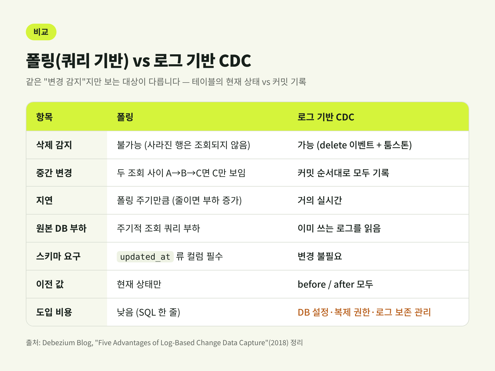
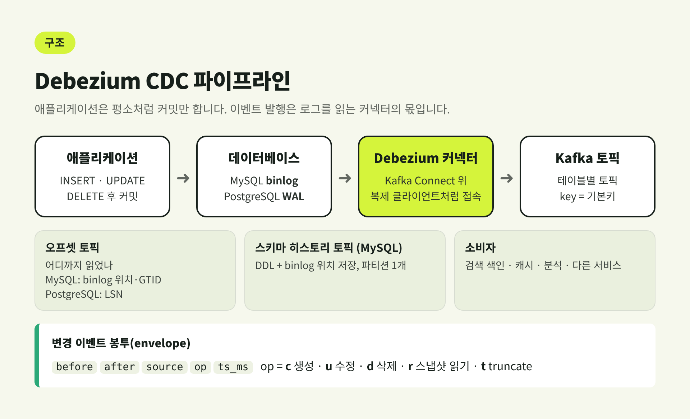
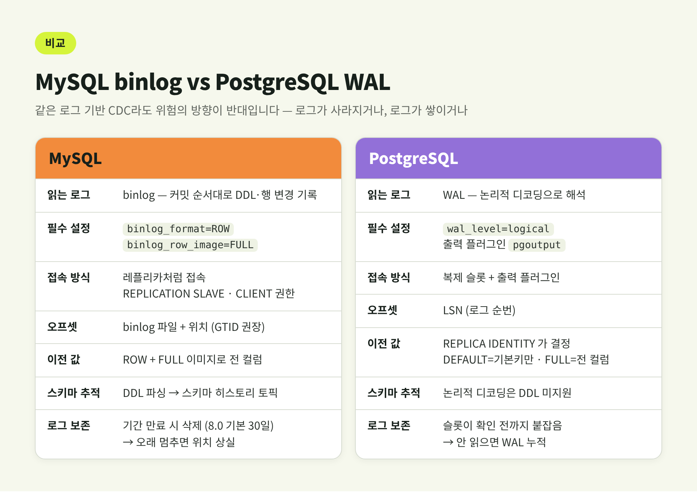
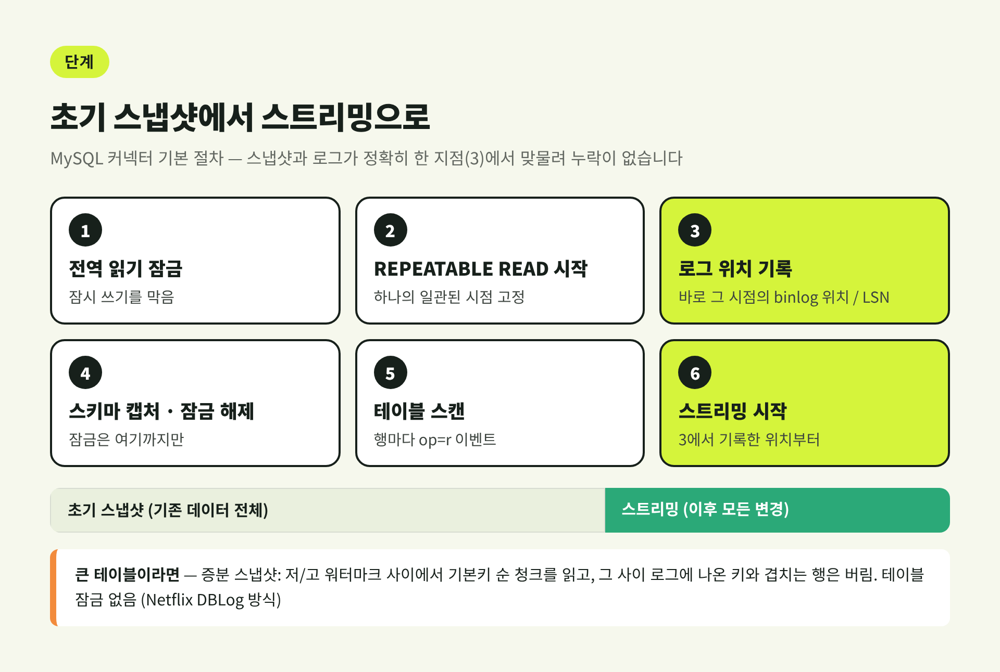
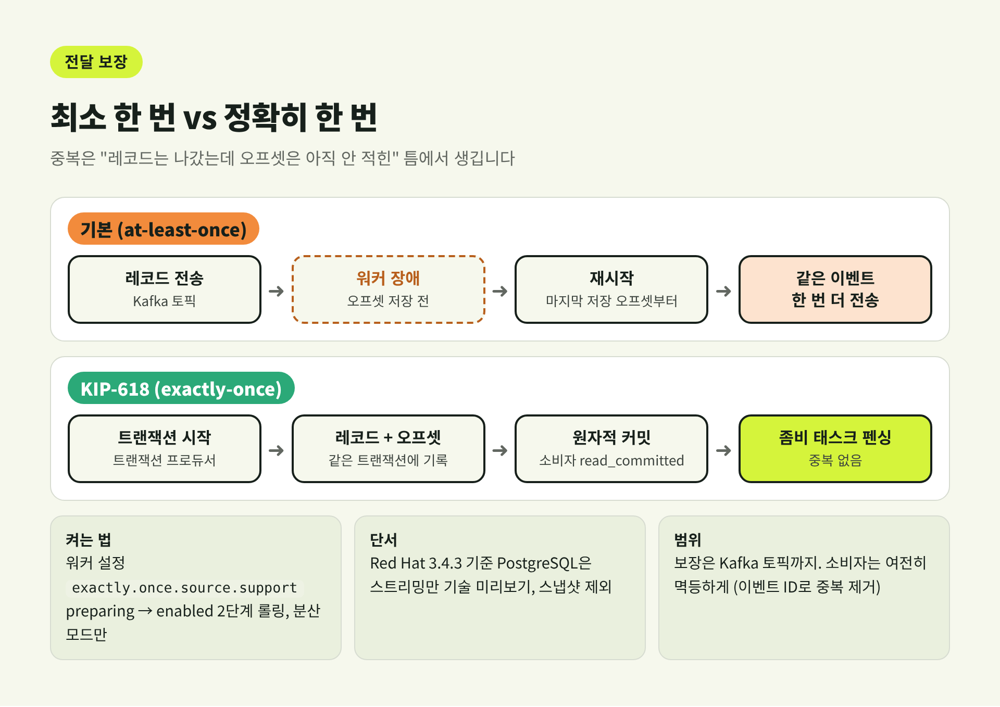
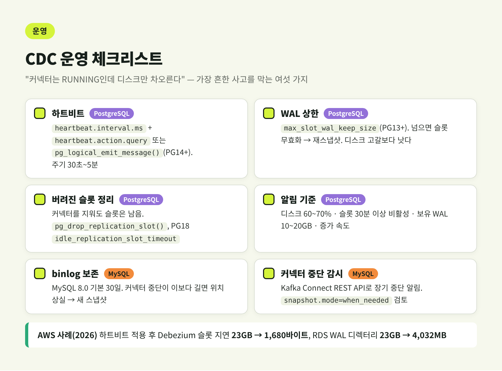

CDC와 Debezium 원리 — DB 트랜잭션 로그가 Kafka 이벤트가 되기까지

이번 글에서는 CDC(Change Data Capture)와 그 대표 구현체인 Debezium이 어떻게 동작하는지 정리해 보겠습니다. 핵심은 하나입니다. 데이터베이스가 원래 쓰고 있던 트랜잭션 로그를 읽어, 변경 하나하나를 Kafka 이벤트로 바꾸는 것입니다. MySQL binlog와 PostgreSQL WAL을 읽는 방식, 스냅샷과 스트리밍, 전달 보장, 스키마 변경, 그리고 운영에서 자주 밟는 함정까지 차례로 살펴봅니다.
세 줄 요약
- 로그 기반 CDC는 폴링과 달리 삭제와 중간 변경까지 커밋 순서대로 잡아냅니다.
- Debezium은 "초기 스냅샷 → 로그 스트리밍"으로 기존 데이터와 이후 변경을 빈틈없이 잇고, 기본 전달 보장은 최소 한 번입니다.
- 운영의 최대 함정은 PostgreSQL 복제 슬롯의 WAL 누적과 MySQL binlog 만료입니다.
■ 폴링으로는 왜 부족한가
다른 시스템에 DB 변경을 알리는 가장 흔한 방법은 폴링입니다.
몇 초마다 updated_at > 마지막 조회 시각으로 바뀐 행을 가져오는 식입니다.
스프링으로 오래 개발해 오신 분이라면 이런 배치를 한 번쯤 짜 보셨을 겁니다.
단순해서 좋습니다만, 구조적인 빈틈이 있습니다. Debezium 블로그에 실린 Gunnar Morling의 2018년 글은 로그 기반 CDC의 장점을 다섯 가지로 정리합니다.
- 삭제를 볼 수 없다. 폴링은 지난 조회 이후 사라진 행을 알아낼 방법이 없습니다.
- 중간 변경을 놓친다. 두 번의 조회 사이에 값이 A→B→C로 바뀌면 C만 보입니다.
- 지연과 부하가 맞물린다. 주기를 줄이면 원본 DB 부하가 늘고, 늘리면 지연이 커집니다.
- 스키마에 손을 대야 한다. 모든 대상 테이블에
LAST_UPDATE_TIMESTAMP같은 컬럼이 있어야 하고, 누군가 그 값을 꼬박꼬박 갱신해야 합니다. - 이전 값이 없다. 폴링은 현재 상태만 돌려줍니다. 로그 기반은 update·delete의 이전 값과 트랜잭션 ID 같은 메타데이터까지 줄 수 있습니다.
로그를 읽으면 이 문제가 한꺼번에 풀립니다. 원문 표현을 빌리면, 데이터베이스 로그에는 모든 변경이 "적용된 정확한 순서대로" 남아 있기 때문입니다.

물론 공짜는 아닙니다. DB 설정을 바꾸고 복제 권한을 줘야 하며, 로그 보존이라는 새 운영 과제가 생깁니다. 이 대가는 뒤에서 따로 다루겠습니다.
■ Debezium 파이프라인의 기본 구조
Debezium은 보통 Kafka Connect 위에서 소스 커넥터로 돌아갑니다. 흐름은 이렇습니다.
- 애플리케이션이 평소처럼 DB에 쓰고 커밋합니다.
- DB는 복구와 복제를 위해 원래 트랜잭션 로그(binlog, WAL)를 기록합니다.
- Debezium 커넥터가 복제 클라이언트처럼 붙어 그 로그를 읽습니다.
- 행 단위 변경을 이벤트로 바꿔 테이블별 Kafka 토픽에 씁니다.
- 어디까지 읽었는지(오프셋)는 Kafka Connect가 별도 토픽에 기록합니다.
애플리케이션 코드는 아무것도 모릅니다. 이벤트 발행 코드를 넣지 않아도 커밋된 변경이 스트림으로 흘러나옵니다.
이벤트 하나는 before, after, source, op, ts_ms로 이루어진 봉투(envelope) 구조입니다.
op는 c(생성), u(수정), d(삭제), r(스냅샷 읽기), t(truncate) 등으로 구분됩니다.
source에는 어느 DB, 어느 로그 위치에서 나온 변경인지가 담깁니다.
삭제 이벤트 뒤에는 같은 키에 값이 null인 툼스톤 이벤트가 하나 더 붙습니다. Kafka 로그 컴팩션이 그 키의 이전 메시지를 정리할 수 있게 하려는 장치입니다.

■ MySQL은 binlog를, PostgreSQL은 WAL을 읽는다
같은 "로그 읽기"라도 두 DB는 방식이 꽤 다릅니다.
MySQL — 레플리카인 척 binlog를 받는다
MySQL binlog는 커밋된 순서대로 DDL과 행 변경을 모두 기록합니다.
Debezium은 MySQL 입장에서 하나의 레플리카처럼 접속해 이 로그를 받아 갑니다.
그래서 계정에 REPLICATION SLAVE, REPLICATION CLIENT와 함께 SELECT, RELOAD, SHOW DATABASES 권한을 줍니다.
설정에서 반드시 확인할 값이 두 가지 있습니다.
binlog_format = ROW— SQL 문장이 아니라 바뀐 행 자체를 기록해야 합니다.binlog_row_image = FULL— 변경 전후의 모든 컬럼 값이 남아야 합니다.
GTID는 필수는 아니지만 켜 두기를 권합니다. 읽기 전용 증분 스냅샷 같은 기능은 GTID를 전제로 합니다.
여기에 한 가지 숨은 문제가 있습니다. binlog의 행 이벤트만으로는 "세 번째 컬럼이 무엇인지" 알 수 없습니다. 그래서 Debezium은 binlog 안의 DDL을 직접 파싱해 테이블 구조를 추적하고, 그 DDL을 binlog 위치와 함께 스키마 히스토리 토픽에 저장합니다. 재시작하면 시작 위치까지 DDL을 다시 재생해 당시 구조를 복원합니다. 이 토픽은 내부용이며, 순서가 생명이라 파티션을 반드시 1개로 둡니다.
PostgreSQL — 논리적 디코딩과 복제 슬롯
PostgreSQL WAL은 원래 물리적 복구용이라 그대로 읽기 어렵습니다. 그래서 9.4부터 논리적 디코딩이 생겼습니다. WAL의 내부 표현을 "내부 상태를 몰라도 해석할 수 있는" 형식으로 풀어 주는 기능입니다.
준비물은 세 가지입니다.
wal_level = logical- 출력 플러그인 — PostgreSQL 10부터 내장된
pgoutput이 표준입니다. - 복제 슬롯 — 한 DB의 변경을 원래 순서대로 재생해 주는 스트림이자, 소비자가 어디까지 읽었는지 기억하는 책갈피입니다.
Debezium의 오프셋은 이벤트마다 기록된 LSN(로그 순번)입니다. 커넥터가 처리를 확인해 줘야 슬롯이 앞으로 나아가고, 그제야 PostgreSQL이 오래된 WAL을 지울 수 있습니다. 이 성질이 뒤에서 말할 운영 함정의 씨앗이 됩니다.
update·delete 이벤트의 before에 무엇이 담기는지는 테이블의 REPLICA IDENTITY가 정합니다.
기본값(DEFAULT)이면 기본키 값만, FULL이면 모든 컬럼의 이전 값이 들어옵니다.
기본키가 없는 테이블을 DEFAULT로 두면 생성 이벤트만 나옵니다.
FULL은 편하지만 공짜가 아닙니다. Morling이 인용한 한 벤치마크에서는 피크 CPU가 30%에서 35%로 올랐습니다.

■ 스냅샷과 스트리밍, 두 단계로 빈틈을 메운다
로그에는 보존 기간이 있습니다. 커넥터를 처음 붙였을 때, 이미 테이블에 있는 수백만 행의 생성 기록은 로그에 남아 있지 않습니다. 그래서 Debezium은 먼저 초기 스냅샷을 뜨고, 그 다음 스트리밍으로 넘어갑니다.
까다로운 부분은 둘의 경계입니다. 스냅샷을 뜨는 동안에도 쓰기는 계속 들어오니까요. MySQL 커넥터의 기본 절차는 이 문제를 이렇게 풉니다.
- 전역 읽기 잠금을 걸어 잠시 쓰기를 막습니다.
- REPEATABLE READ 트랜잭션을 시작합니다. 이후 읽기는 하나의 일관된 시점을 봅니다.
- 바로 그 시점의 binlog 위치를 읽어 둡니다.
- 테이블 스키마를 캡처하고 잠금을 풉니다.
- 일관된 시점 기준으로 테이블을 훑으며 행마다
op=r이벤트를 냅니다. - 끝나면 3번에서 기억한 위치부터 binlog 스트리밍을 시작합니다.
잠금은 위치를 잡는 짧은 순간에만 필요합니다. 스냅샷 데이터와 이후 변경이 정확히 한 지점에서 맞물리므로 누락이 없습니다. 관리형 DB처럼 전역 잠금이 허용되지 않는 환경에서는 테이블 단위 잠금으로 대신합니다. PostgreSQL도 원리는 같습니다. 트랜잭션 안에서 현재 LSN을 읽고 스캔한 뒤, 그 LSN부터 스트리밍합니다.

다만 테이블이 크면 이야기가 달라집니다. Netflix 엔지니어들은 2020년 DBLog 논문에서 잠금 기반 스냅샷이 MySQL RDS에서 "모든 행을 SELECT할 때까지 쓰기를 막는다"고 지적했습니다. 그들이 내놓은 답이 워터마크 방식입니다.
- 워터마크 테이블에 저(low) 워터마크를 기록합니다.
- 기본키 순으로 한 청크만 읽어 메모리에 둡니다.
- 고(high) 워터마크를 기록합니다.
- 두 워터마크 사이 로그에 등장한 키와 겹치는 청크 행은 버립니다. 로그 쪽 값이 더 새것이기 때문입니다.
테이블 잠금 없이 로그 처리와 청크 조회를 번갈아 진행하는 셈입니다.
Debezium의 증분 스냅샷이 이 아이디어를 따릅니다.
시그널링 테이블이나 Kafka 토픽으로 execute-snapshot 신호를 보내면, 운영 중에도 특정 테이블만 다시 스냅샷할 수 있습니다.
snapshot.mode도 알아 두면 좋습니다.
기본값 initial은 오프셋이 없을 때 스냅샷 후 스트리밍, when_needed는 기록된 위치를 더는 쓸 수 없을 때도 자동으로 스냅샷을 다시 뜹니다.
■ 오프셋과 전달 보장 — 최소 한 번이 기본이다
예전에는 "Debezium은 최소 한 번(at-least-once)"이라는 한 문장으로 정리됐습니다. 지금은 정확히 한 번(exactly-once)도 선택지가 되었습니다만, 왜 중복이 생기는지부터 아는 편이 좋습니다.
Kafka Connect는 레코드를 Kafka에 먼저 보내고, 오프셋은 별도 내부 토픽에 타이머로 기록합니다. 레코드는 나갔는데 오프셋을 쓰기 직전에 워커가 죽으면 어떻게 될까요. 재시작한 커넥터는 마지막으로 저장된 오프셋부터 다시 읽고, 이미 보낸 이벤트를 한 번 더 보냅니다. Kafka의 KIP-618 문서가 정확히 이 시나리오를 문제로 짚습니다.
PostgreSQL도 같은 태도입니다. 공식 문서는 슬롯 위치가 체크포인트 때만 저장되므로 크래시 후 최근 변경이 다시 전송될 수 있고, 중복 처리의 책임은 클라이언트에 있다고 명시합니다.
반대로 유실은 Debezium 자체의 문제가 아닙니다. Morling은 "Debezium은 스스로 이벤트를 놓쳐서는 안 된다"고 썼습니다. 유실은 커넥터가 읽기 전에 DB가 로그를 지워 버리는 운영 공백에서 생깁니다.
정확히 한 번은 KIP-618이 길을 열었습니다.
소스 태스크가 트랜잭션 프로듀서로 레코드와 오프셋을 같은 트랜잭션에 원자적으로 쓰고, 이전 세대의 좀비 태스크는 펜싱으로 막습니다.
워커 설정 exactly.once.source.support를 모든 워커에서 preparing, 다음 롤링에서 enabled로 두 단계에 걸쳐 켭니다. 분산 모드에서만 됩니다.
Debezium 3.3 시리즈는 모든 커넥터에서 정확히 한 번 전달을 지원한다고 밝혔습니다. Red Hat의 Debezium 3.4.3 릴리스 노트는 조금 더 조심스럽습니다. MySQL, PostgreSQL 등 코어 커넥터에 정식 지원(GA)이지만, PostgreSQL은 스트리밍 구간만 기술 미리보기이고 스냅샷에는 적용되지 않는다고 적고 있습니다.

여기서 오해하기 쉬운 지점이 있습니다. 이 보장은 "Kafka 토픽에 쓰는 데까지"입니다. 소비자가 이벤트를 받아 다른 DB에 반영하는 구간은 여전히 소비자 몫입니다. 그래서 저는 EOS를 켜더라도 소비자는 멱등하게 만드는 쪽을 권합니다. 보안 이벤트처럼 같은 건이 두 번 집계되면 곤란한 데이터라면 더욱 그렇습니다.
■ 스키마가 바뀔 때
운영 중 컬럼 추가는 일상입니다. CDC 입장에서는 "이 이벤트를 어떤 구조로 읽어야 하는가"의 문제가 됩니다.
MySQL 커넥터는 앞서 말한 스키마 히스토리 토픽으로 이를 해결합니다.
DDL이 binlog 위치와 함께 저장되므로, 과거 위치의 이벤트도 당시 구조로 해석할 수 있습니다.
대신 이 토픽이 깨지면 커넥터가 이벤트를 해석하지 못합니다.
이때는 snapshot.mode=recovery로 히스토리를 다시 만듭니다.
DDL 파서는 지금도 꾸준히 손보는 영역입니다. 최근 릴리스 노트에도 ALTER TABLE 파싱 수정이 올라와 있습니다.
PostgreSQL은 사정이 다릅니다. 공식 문서 표현 그대로 논리적 디코딩은 DDL을 지원하지 않습니다. 소비자에게 "컬럼이 추가되었다"는 DDL 이벤트를 따로 줄 수 없다는 뜻입니다. 스키마 변경을 다운스트림까지 자동으로 끌고 가야 한다면, 이 차이를 설계 단계에서 감안해야 합니다.
어느 쪽이든 원칙은 같습니다. 컬럼 추가처럼 하위 호환되는 변경은 비교적 안전하고, 이름 변경이나 타입 변경은 소비자를 깨뜨리기 쉽습니다.
■ 아웃박스 패턴과 만나는 지점
아웃박스 패턴 자체는 지난 'Saga 패턴과 아웃박스' 글에서 다뤘으니, 여기서는 CDC와 맞물리는 부분만 보겠습니다.
업무 테이블을 그대로 CDC로 내보내면 내부 스키마가 곧 외부 계약이 됩니다.
컬럼 하나 바꿀 때마다 소비자 팀과 협의해야 하는 상황이 옵니다.
아웃박스는 애플리케이션이 같은 트랜잭션 안에서 outbox 테이블에 "공개용 이벤트"를 한 줄 쓰고, CDC는 그 테이블만 읽게 합니다.
Debezium의 Outbox Event Router 변환이 이 역할을 맡습니다.
aggregatetype값으로 토픽을 고릅니다.Order면outbox.event.order로 갑니다.aggregateid가 Kafka 메시지 키가 되어, 같은 주문의 이벤트가 같은 파티션에서 순서를 지킵니다.id(UUID)는 메시지 헤더로 실려, 소비자가 중복을 걸러내는 키로 쓸 수 있습니다.
앞 장의 "최소 한 번"과 이 id 헤더가 짝을 이루는 셈입니다.
폴링으로 아웃박스를 읽던 구조를 CDC로 바꾸면, 발행 지연과 원본 부하라는 두 문제가 함께 줄어듭니다.
■ 운영에서 가장 먼저 밟는 함정 — WAL 누적
PostgreSQL 공식 문서에는 이런 경고가 있습니다. 복제 슬롯은 크래시를 넘어 살아남고, 소비자 상태를 전혀 모르며, 연결이 없어도 필요한 자원의 삭제를 막는다는 것입니다. WAL뿐 아니라 VACUUM이 지워야 할 카탈로그 행도 붙잡아, 극단적인 경우 트랜잭션 ID 고갈을 막으려고 DB가 멈출 수도 있다고 적혀 있습니다.
현장에서 자주 보는 원인은 두 가지입니다.
- 버려진 슬롯 — 커넥터를 지워도 슬롯은 남습니다. 아무도 읽지 않는 슬롯이 WAL을 계속 붙잡습니다.
- 한가한 DB, 바쁜 인스턴스 — WAL은 인스턴스 전체 단위로 쌓이는데 슬롯은 DB 단위입니다. 캡처 대상 테이블에 변경이 없으면 슬롯이 전진할 계기가 없고, 그 사이 다른 DB가 만든 WAL이 고스란히 쌓입니다.
두 번째가 특히 고약합니다. 커넥터는 멀쩡히 RUNNING인데 디스크만 조용히 차오르기 때문입니다.
해법은 하트비트입니다.
heartbeat.interval.ms와 heartbeat.action.query를 설정해 주기적으로 하트비트 테이블에 쓰거나, PostgreSQL 14부터는 pg_logical_emit_message()로 테이블 없이 WAL에 메시지만 남길 수 있습니다.
AWS가 2026년 9월 공개한 사례에서는 하트비트 적용 후 Debezium 슬롯 지연이 23GB에서 1,680바이트로, RDS for PostgreSQL의 WAL 디렉터리가 23GB에서 4,032MB로 줄었습니다.
권장 주기는 WAL 생성량에 따라 30초에서 5분 사이로 제시합니다.
그래도 사고는 납니다. 그래서 안전망을 겹으로 둡니다.
max_slot_wal_keep_size(PostgreSQL 13+)로 슬롯이 붙잡을 WAL 상한을 둡니다. 넘으면 슬롯이 무효화되고 새 스냅샷이 필요하지만, 프라이머리 디스크가 가득 차는 것보다는 낫습니다.- PostgreSQL 18의
idle_replication_slot_timeout으로 오래 놀고 있는 슬롯을 정리할 수 있습니다. pg_replication_slots에서 슬롯별 보유 WAL과 활성 여부를 봅니다.
Morling이 제안한 알림 기준은 디스크 사용률 60~70% 초과, 슬롯 30분 이상 비활성, 슬롯당 보유 WAL 10~20GB 초과입니다. 절대값뿐 아니라 증가 속도에도 알림을 걸라는 조언이 덧붙어 있습니다.
MySQL은 반대 방향의 함정입니다. 슬롯 같은 장치가 없어 디스크는 안전하지만, 기한이 지나면 binlog가 지워집니다. MySQL 8.0부터 기본 보존 기간은 30일입니다. 커넥터가 그보다 오래 멈춰 있으면 위치를 잃고 새 스냅샷을 떠야 합니다. 커넥터가 오래 멈춰 있는지 감시하는 알림이 필요한 이유입니다.

정리하면 이렇습니다. CDC는 새로운 무언가를 만드는 기술이라기보다, 데이터베이스가 이미 남기고 있던 기록을 꺼내 쓰는 기술입니다. 그래서 강력하고, 그래서 그 기록을 관리하는 책임도 함께 넘겨받습니다.
예전에는 "변경을 어떻게 알아낼까"를 고민했다면, 이제는 "로그를 얼마나, 누가 붙잡고 있는가"를 지켜봐야 합니다.
"로그는 이미 거기 있다. 남은 일은 그것을 잃지도, 쌓아 두지도 않는 것이다."
폴링 배치를 CDC로 바꿀 만하냐고 물으신다면, 하트비트와 알림을 함께 챙긴다는 조건으로 그렇다고 답하겠습니다.
참고자료
- Debezium Documentation — Debezium connector for MySQL: https://debezium.io/documentation/reference/connectors/mysql.html
- Debezium Documentation — Debezium connector for PostgreSQL: https://debezium.io/documentation/reference/connectors/postgresql.html
- Gunnar Morling, "Five Advantages of Log-Based Change Data Capture", Debezium Blog (2018): https://debezium.io/blog/2018/07/19/advantages-of-log-based-change-data-capture/
- Gunnar Morling, "Mastering Postgres Replication Slots" (2025): https://morling.dev/blog/mastering-postgres-replication-slots
- Gunnar Morling, "Can Debezium Lose Events?" (2023): https://morling.dev/blog/can-debezium-lose-events
- Apache Kafka, KIP-618: Exactly-Once Support for Source Connectors: https://cwiki.apache.org/confluence/display/KAFKA/KIP-618:+Exactly-Once+Support+for+Source+Connectors
- Red Hat, Release Notes for Red Hat build of Debezium 3.4.3: https://docs.redhat.com/en/documentation/red_hat_build_of_debezium/3.4.3/html-single/release_notes_for_red_hat_build_of_debezium_3.4.3/index
- Debezium Releases 3.3: https://debezium.io/releases/3.3
- Andreakis & Papapanagiotou, "DBLog: A Watermark Based Change-Data-Capture Framework" (2020): https://arxiv.org/abs/2010.12597
- Debezium Documentation — Outbox Event Router: https://debezium.io/documentation/reference/2.4/transformations/outbox-event-router.html
- AWS Database Blog, "Resolving PostgreSQL replication lag with heartbeat tables in change data capture scenarios" (2026): https://aws.amazon.com/blogs/database/resolving-postgresql-replication-lag-with-heartbeat-tables-in-change-data-capture-scenarios/
- PostgreSQL Documentation — Logical Decoding Concepts: https://www.postgresql.org/docs/current/logicaldecoding-explanation.html
- MySQL Worklog WL#10478 — Defaults: Enable Binary Log Expiration: https://dev.mysql.com/worklog/task/?id=10478
- Confluent Documentation — Debezium MySQL CDC Source Connector: https://docs.confluent.io/debezium-connect-mysql-source/current/overview.html
- Redis Docs — Prepare MySQL/MariaDB for RDI: https://redis.io/docs/latest/integrate/redis-data-integration/data-pipelines/prepare-dbs/my-sql-mariadb/